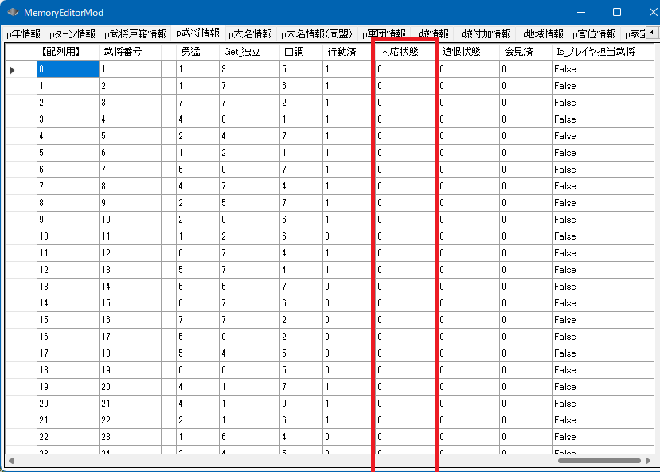

内応状態 と 内応先の大名
内応先の大名があることを示す。「内応先の大名」のデータだけあれば内応状態かどうかはわかるのであるが、
データはなぜか２つで１セットである。

p武将情報[ix].内応状態
p武将情報[ix].内応先大名【大名番号】
内応状態がtrueなら、内応先大名【大名番号】 には内応先の大名の番号が格納されている。
内応状態がfalseなら、内応先大名【大名番号】は0xFFFFであるべきである。
全ての現役と軍団長の中で、内応している武将、内応先はどの大名なのか確かめる
void カスタム::On_プレイヤ担当ターン《メイン画面》() {
// 内応状態の時、内応先の大名がおり、その大名が存命ならば、その名前を表示する
for (int iBushouID = 0; iBushouID < 最大数::武将情報::配列数; iBushouID++) {
if (p武将戸籍情報[iBushouID].状態 == 状態::現役 || p武将戸籍情報[iBushouID].状態 == 状態::軍団長) {
if (p武将情報[iBushouID].内応状態) {
デバッグ出力 << Get_名字(iBushouID) + Get_名前(iBushouID) << "は内応状態にあります。" << endl;
bool 内応先大名は有効である = false;
int iDaimyoID = p武将情報[iBushouID].内応先大名【大名番号】 - 1;
if (0 <= iDaimyoID && iDaimyoID < 最大数::大名情報::配列数) {
int iDaimyoBushouID = p大名情報[iDaimyoID].大名【武将番号】 - 1;
if (0 <= iDaimyoBushouID && iDaimyoBushouID < 最大数::武将情報::配列数) {
内応先大名は有効である = true;
デバッグ出力 << "内応先の大名は、" << Get_名字(iDaimyoBushouID) + Get_名前(iDaimyoBushouID) << "が支配する大名家です。" << endl;
}
}
//
if (内応先大名は有効である == false) {
デバッグ出力 << "しかしながら、内応先の大名は有効ではありません。" << endl;
}
}
}
}
}
特定の武将を特定の大名へと内応させる
void カスタム::On_プレイヤ担当ターン《メイン画面》() {
int i勝家BushouID = Get_武将番号【配列用】(顔番号::柴田勝家);
int i信玄BushouID = Get_武将番号【配列用】(顔番号::武田晴信);
// 勝家も信玄も532枠にいる
if (0 <= i勝家BushouID && i勝家BushouID < 最大数::武将情報::配列数 &&
0 <= i信玄BushouID && i信玄BushouID < 最大数::武将情報::配列数) {
// 勝家が現役 もしくは 勝家が軍団長
if (p武将戸籍情報[i勝家BushouID].状態 == 状態::現役 || p武将戸籍情報[i勝家BushouID].状態 == 状態::軍団長) {
// 信玄が大名なら
if (p武将戸籍情報[i信玄BushouID].状態 == 状態::大名) {
p武将情報[i勝家BushouID].内応状態 = true;
// 大名たる信玄が所属している大名家の番号を、勝家の内応先大名番号として入れる
p武将情報[i勝家BushouID].内応先大名【大名番号】 = p武将情報[i信玄BushouID].所属大名【大名番号】;
デバッグ出力 << "柴田勝家は武田晴信に内応しました" << endl;
}
}
}
}
特定の武将の内応状態をクリア
void カスタム::On_プレイヤ担当ターン《メイン画面》() {
int i勝家BushouID = Get_武将番号【配列用】(顔番号::柴田勝家);
if (0 <= i勝家BushouID && i勝家BushouID < 最大数::武将情報::配列数) {
p武将情報[i勝家BushouID].内応状態 = false;
p武将情報[i勝家BushouID].内応先大名【大名番号】 = 0xFFFF;
}
}
遺恨状態
遺恨状態は、武将が「現在、仕えている」大名に対してのみ有効なフラグ。
５等級以上の家宝を没収した場合や、大名死後の家督相続で、新大名との相性差がとても大きい場合、
遺恨状態となる。
大名家から出奔し浪人化したり、一度、他の大名家に仕えると遺恨状態ではなくなる。
p武将情報[ix].遺恨状態
遺恨状態の参照
void カスタム::On_プレイヤ担当ターン《メイン画面》() {
for (int iBushouID = 0; iBushouID < 最大数::武将情報::配列数; iBushouID++) {
if (p武将情報[iBushouID].遺恨状態) {
デバッグ出力 << Get_名字(iBushouID) + Get_名前(iBushouID) << "は" << "遺恨状態です" << endl;
int iDaimyoID = p武将情報[iBushouID].所属大名【大名番号】 - 1;
if (0 <= iDaimyoID && iDaimyoID < 最大数::大名情報::配列数) {
int iDaimyoBushouID = p大名情報[iDaimyoID].大名【武将番号】 - 1;
if (0 <= iDaimyoBushouID && iDaimyoBushouID < 最大数::武将情報::配列数) {
デバッグ出力 << "怒りの矛先の大名は自身が仕える、" << Get_名字(iDaimyoBushouID) + Get_名前(iDaimyoBushouID) << "です" << endl;
}
}
}
}
}
現役や軍団長を全員、遺恨状態にする
void カスタム::On_プレイヤ担当ターン《メイン画面》() {
// 全ての現役や軍団長が遺恨状態。
for (int iBushouID = 0; iBushouID < 最大数::武将情報::配列数; iBushouID++) {
if (p武将戸籍情報[iBushouID].状態 == 状態::現役 || p武将戸籍情報[iBushouID].状態 == 状態::軍団長) {
p武将情報[iBushouID].遺恨状態 = 1;
}
}
}
忠誠

p武将情報[ix].忠誠
０～100の値を取ります。0は内応や裏切りをしやすい状態です。
一方、やや裏切りやすい性格であっても忠誠100があれば、いきなり裏切るといったことは起きにくいと言えます。
void カスタム::On_相場変更直前() {
for (int iBushouID = 0; iBushouID < 最大数::武将情報::配列数; iBushouID++) {
// 一般の「宿老・家老・部将・侍大将・足軽頭」、そして「軍団長」 が対象
if (p武将戸籍情報[iBushouID].状態 == 状態::現役 || p武将戸籍情報[iBushouID].状態 == 状態::軍団長) {
// 義理が4以下の武将は相場が切り替わるごとに（＝季節ごとに）、忠誠が5減っていく
if (p武将情報[iBushouID].義理 <= 4) {
int 忠誠 = p武将情報[iBushouID].忠誠; // 負のオーバーフローを防止するため、一旦 int で受け取る
忠誠 = 忠誠 - 5;
if (忠誠 < 0) {
忠誠 = 0;
}
p武将情報[iBushouID].忠誠 = 忠誠;
}
// 義理が11以上の武将は相場が切り替わるごとに（＝季節ごとに）、忠誠が5増える
else if (p武将情報[iBushouID].義理 >= 11) {
int 忠誠 = p武将情報[iBushouID].忠誠; // オーバーフローを防止するため、一旦 int で受け取る
忠誠 = 忠誠 + 5;
if (忠誠 > 100) {
忠誠 = 100;
}
p武将情報[iBushouID].忠誠 = 忠誠;
}
}
}
}
より詳細を知るには...
「武将 － 内応・遺恨」に関する主な所は以上となります。
詳しくは「武将情報型.h」を参照してください。